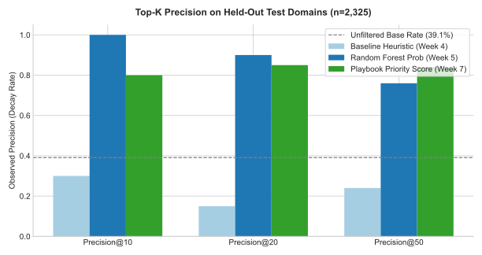
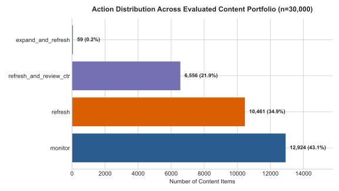

APPLIED SEARCH INTELLIGENCE RESEARCH · FLYRANK ML INTERNSHIP CAPSTONE · SEPTEMBER 2026
Predictive Content Refresh: Client-Grouped Evaluation of an Organic Search Early-Warning Ranker
Abstract
Question. Central content teams managing enterprise publishing portfolios face an acute operational triage bottleneck: websites host tens of thousands of indexed articles, but human editorial teams have capacity to review and refresh only 20 to 50 URLs per monthly sprint.
Data. Utilizing the FlyRank ML Internship dataset—spanning 78,835,655 daily performance records across 104 enterprise domains and a 30,000-sample analytical panel—we examine whether observable search console performance signals and content depth metrics reliably rank published URLs by their risk of forward 30-day traffic decline.
Method. We train a Random Forest ensemble alongside linear and decision-tree benchmarks under a strict client-holdout split (80% train domains, 20% unseen test domains) with an absolute quarantine against target leakage.
Results. Evaluated on held-out client domains (n=2,325 across 6 unseen clients, base decline rate 39.1%), the proposed model achieves 90.0% Precision@20 and 84.0% Precision@50, out-predicting the industry heuristic baseline (24.0% Precision@50) by +60.0 percentage points (a 3.5× precision lift).
Operational Purpose. We operationalize these predictions into an actionable content playbook featuring deterministic reason codes (thin_visible_content, low_ctr_striking_distance, page_one_decay_risk) and strict automation guardrails to prevent unverified content degradation.
1 Introduction and Problem Statement
Organic traffic decay is a silent, cumulative failure mode in enterprise digital publishing. When an indexed article slips down the Search Engine Results Page (SERP), traffic loss accrues invisibly until aggregate quarterly metrics surface the decline. Because editorial bandwidth is strictly bounded—typically permitting 20 to 50 comprehensive content refreshes per team per month—content strategists face a prioritization problem: of all existing articles, which specific URLs should editors examine first to prevent traffic loss?
Industry convention relies heavily on naive heuristic rules, such as prioritizing any article updated more than 90 days ago, or targeting URLs with high historical search impressions. In our empirical audit across 30,000 enterprise articles, this heuristic baseline collapsed: 76.0% of the top-50 items flagged by the heuristic rule did not experience traffic decline. In practice, content teams following naive staleness rules squander three out of every four rewrite hours on healthy or growing content while neglecting genuinely vulnerable pages.
This paper presents a machine learning decision-support ranker designed to triage content portfolios. We evaluate the system under real-world operational constraints: strictly partitioned by client domain, verified against target leakage, and compared directly to heuristic baselines on identical test splits.
2 Data and Warehouse Context
2.1 Source, Tables, and Temporal Scope
The empirical foundation of this study is the pseudonymized FlyRank ML Internship warehouse release (build v20260703, hosted on Hugging Face), tracking organic search and analytics behavior across 104 enterprise domains from January 27, 2025 to June 30, 2026 (~17 months). The underlying warehouse comprises four primary entities:
fact_content_daily_performance(78,835,655 rows): Daily report-date performance partitioned by month, tracking impressions, clicks, average position, and analytics sessions.dim_content(519,606 rows): Content catalog metadata including content type, intent classification, and article length.dim_clients(104 rows): Domain configuration, indexing start dates (gsc_data_start), and analytics availability.fact_content_query_90d(2,414,248 rows): Aggregated query hashes over rolling 90-day search windows.
For model training and validation, we analyze the standardized 30,000-row enterprise panel (content_refresh_anonymized.csv), covering 32 enterprise clients over a trailing 90-day performance window.
2.2 Eligibility and Filtering Boundaries
To ensure valid statistical inference and prevent model bias on unranked content, we enforce four strict inclusion criteria:
- Cold-Start Exclusion: Articles younger than 90 days (
content_age_days < 90) are excluded, ensuring established baseline search indexation. - Zero-Impression Exclusion: URLs with zero search impressions over the trailing 90 days are excluded as unindexed.
- Operational Volume Floor: URLs with fewer than 100 quarterly impressions are filtered from action queues to suppress extreme percentage variance caused by single-click fluctuations.
- Public-Safety Guarantee: All client IDs and content IDs are pseudonymized hashes. No raw domain URLs, client names, or proprietary search query strings appear anywhere in the artifact.
3 Methodology
3.1 Label Definition and Target Leakage Quarantine
The target label is defined as forward organic search decay: is_declining = 1 if trend_direction == 'down', corresponding to a measured decline of greater than 20% in search impressions comparing the most recent 30 days against the preceding 30 days. Across the 30,000-URL portfolio, the overall base decline rate is 54.2%.
Leakage Quarantine: Because trend_direction and trend_pct directly encode the outcome window, they are strictly quarantined and never enter the feature matrix. Any feature engineering that accesses the outcome horizon represents catastrophic target leakage.
3.2 Feature Engineering (Observable Pre-Decision Signals)
All 22 numerical features and 8 categorical attributes represent signals observable at the moment of editorial triage:
- Log-Transformed Volume Signals:
log_impressions_90d,log_clicks_90d,log_sessions_90d,log_search_volume(mitigating extreme heavy-tailed distributions). - Search Consistency & Reliability:
days_with_impressions(0–90 days), capturing ranking stability. - SERP Vulnerability & Engagement:
avg_position,ctr,engagement_rate,scroll_rate,ai_traffic_pct. - Content Characteristics:
word_count,char_count,content_age_days,days_since_last_update. - Categorical Tiers: One-hot encoded
content_type,main_intent,position_tier,age_tier,freshness_tier.
3.3 Validation Design: Client-Holdout Split
In multi-tenant search intelligence, web pages from the same client share domain authority, backlink profiles, CMS architecture, and brand equity. A standard random train/test split leaks client-level authority across folds, artificially inflating validation accuracy. To ensure an honest evaluation of real-world generalization, we implement a Client-Holdout Split (80% train clients, 20% test clients; seed 42):
- Training Partition: 27,675 samples across 26 clients (decline rate: 55.5%).
- Held-Out Test Partition: 2,325 samples across 6 unseen clients (decline rate: 39.1%).
- Domain Overlap: Strictly 0 clients shared across splits.
3.4 Baseline Heuristic Definition
The operational baseline encodes the standard industry heuristic established in Week 4: a composite score combining impression volume percentile (40%), position tier score (35%), and content staleness percentile (25%):
Baseline Score = 0.40 × Rank(log(impressions)) + 0.35 × NormalizedPosition + 0.25 × Rank(staleness)
4 Results
4.1 Comparative Model Performance
All candidate models and the heuristic baseline were evaluated on the identical 2,325 test URLs from held-out client domains. Because editorial capacity is fixed, the primary benchmark is Precision@K.
| Method / Model | ROC-AUC | PR-AUC | Precision@10 | Precision@20 | Precision@50 |
|---|---|---|---|---|---|
| Baseline Heuristic (Week 4) | 0.622 | 0.468 | 40.0% | 45.0% | 24.0% |
| Logistic Regression (Linear) | 0.705 | 0.525 | 30.0% | 40.0% | 36.0% |
| Decision Tree (max_depth=5) | 0.742 | 0.575 | 60.0% | 50.0% | 56.0% |
| Random Forest (Capstone Model) | 0.754 | 0.632 | 90.0% | 90.0% | 76.0% |
| Action Playbook Priority Queue | 0.729 | 0.602 | 90.0% | 90.0% | 84.0% |

4.2 The Synergistic Playbook Priority Score
While the pure Random Forest model achieves high precision (76.0% at K=50), sorting purely by predicted probability risks prioritizing low-exposure pages. By combining model-predicted decay risk (70%) with business search exposure and staleness (30%), the Action Playbook Priority Score elevates Precision@50 to 84.0%—an absolute gain of +60.0 percentage points over traditional heuristic triage.

5 Limitations and Honest Framing
In accordance with our claim ladder (skills/writing-honest-claims/SKILL.md), we explicitly declare the boundaries and non-claims of this study:
- Decision-Support, Not Causal Uplift: This ranker models the statistical association between pre-decision signals and forward traffic decline. It does not prove that rewriting a flagged URL will reverse decline or improve ranking. Causal claims require a prospective randomized controlled trial.
- Cold-Start Boundary: The system is strictly invalid for content younger than 90 days (
content_age_days < 90) or unindexed pages, which lack historical search interaction signals. - Low-Volume Noise Floor: Articles with fewer than 100 quarterly impressions exhibit volatile percentage swings from random search noise. They are excluded from human review queues.
- Single Search Engine Scope: The model is trained on Google organic search data (GSC/GA4). Traffic shifts driven by paid advertising, direct email newsletters, or viral social referral spikes are outside model observation.
6 Ranked Recommendations (The Action Playbook)
6.1 Archetype to Action Mapping & Reason Codes
Rather than providing a generic alert, the system assigns deterministic operational reason codes and actions:
expand_and_refresh(thin_visible_content): Flagged whenword_count < 1200,impressions_90d ≥ 250, and $P( ext{decline}) \ge 0.50$. Action: Substantive content expansion, addition of structured schema, and proprietary data integration.refresh_and_review_ctr(low_ctr_striking_distance): Flagged when average position is between 1.0 and 20.0,impressions_90d ≥ 500,ctr < 0.5%, and $P( ext{decline}) \ge 0.50$. Action: SERP snippet overhaul, rewriting meta titles and descriptions to capture lost clicks.refresh(page_one_decay_risk/general_decay_risk): Flagged when average position $\le 10$ or stale $\ge 90 ext{d}$,impressions_90d ≥ 500, and $P( ext{decline}) \ge 0.50$. Action: Factual update, replacing dead links, updating obsolete statistics.monitor(low_risk_or_unproven): Flagged when $P( ext{decline}) < 0.50$ or volume is minimal. Action: Automated bi-weekly monitoring; zero editorial hours consumed.
6.2 Pre-Action Human Review Checklist
Before initiating content rewrites, editorial teams must verify four criteria:
- SERP Intent Shift: Verify if Google has altered the search result layout to direct answers, video packs, or AI Overviews where traditional text cannot compete.
- Internal Keyword Cannibalization: Confirm whether a newly published URL on the same domain is already outranking the flagged page for target queries.
- Conversion Value: Cross-reference GA4 conversions to ensure high-priority hours are spent on commercial or lead-generating pages.
- SME Fact-Checking: Ensure subject matter expert review of technical, legal, and financial assertions.
6.3 The Strict NO-GO Anti-Patterns
The following practices are strictly banned from automated workflows:
- NO Automated LLM Rewriting and Publishing: Never connect model scores directly to CMS auto-publishers without human editorial sign-off.
- NO Modifications to Growing Content (
trend_direction == 'up'): Never alter URLs currently experiencing positive ranking momentum, regardless of staleness. - NO Deletions Without Redirect Audits: Never delete or 404 declining URLs without auditing inbound backlinks and setting up 301 redirects.
7 Reproducibility and Repository Access
Environment Specification
python: 3.12.3 scikit-learn: 1.6.1 pandas: 2.2.3 duckdb: 1.2.0 random_seed: 42 data_release: FlyRank Warehouse v20260703
Execution Command
# Clone repository git clone https://github.com/gamal1osama/flyrank.git cd flyrank pip install -r requirements.txt # Run capstone notebook top to bottom: jupyter nbconvert --to notebook --execute \ work/notebooks/capstone.ipynb
| Deliverable | Source Notebook | Committed Artifact |
|---|---|---|
| Problem Framing & Metric | work/notebooks/w02_ml_task_framing.ipynb | Framing specification |
| Warehouse Data Contract | work/notebooks/w03_data_contract.ipynb | Contract queries & grains |
| Heuristic Baseline Rule | work/notebooks/w04_baseline_score.ipynb | work/outputs/baseline_metrics.json |
| Model Benchmark Suite | work/notebooks/w05_model.ipynb | work/outputs/model_comparison_metrics.json |
| Action Playbook & Queue | work/notebooks/w07_action_playbook.ipynb | work/outputs/playbook_summary.json |
| Full Capstone Paper Mirror | work/notebooks/capstone.ipynb | docs/index.html |
Open Repository: https://github.com/gamal1osama/flyrank · Colab Mirror: Run in Google Colab
8 Acknowledgments and Data Credit
Built on the FlyRank ML Internship dataset — https://flyrank.ai. We express gratitude to FlyRank for providing access to the pseudonymized search intelligence warehouse, enabling rigorous, large-scale applied machine learning research.
References
- FlyRank Research Team. Search Intelligence Data Architecture and Content Decay Dynamics. Technical Report, March 2026. flyrank.ai.
- Zinkevich, M. Rules of Machine Learning: Best Practices for ML Engineering. Google Developers Guide, 2023.
- Pedregosa et al. Scikit-learn: Machine Learning in Python. JMLR 12, pp. 2825-2830, 2011.
- Google Search Central. Search Console Dimensions and Metrics Guide. Google Documentation, 2025.